Welcome to gpapExtract’s documentation!¶
Contents:
This plugin is the nextstep of Kmzgeopapaimport plugin
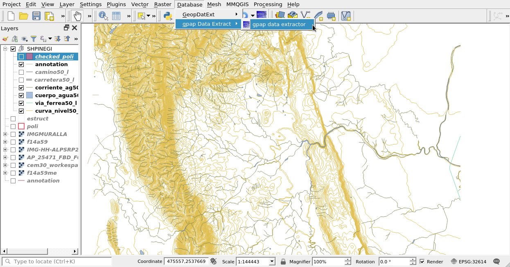Once the gpapExtract Plugin has been installed and activated from the Plugin Menu, it can be acceced in the the database Menu
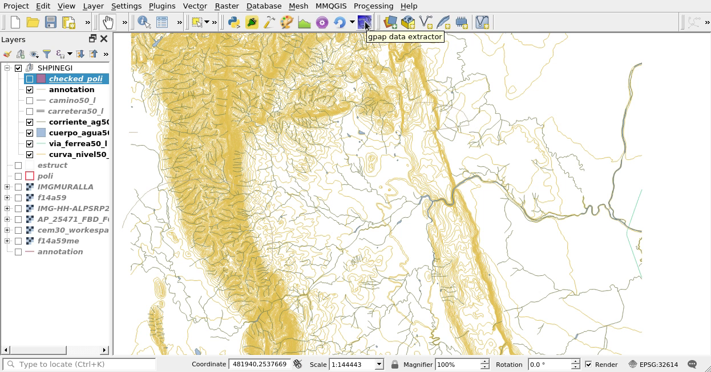Or from the proper icon
gpapExtract Interface¶
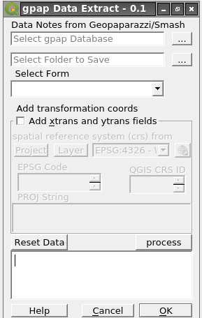Parts of Interface¶
| 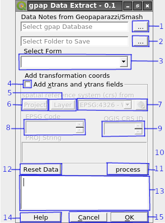 | Essential parts of the Plugin:
|
Database window¶
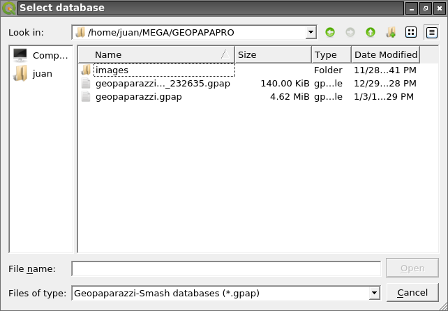Select Folder¶
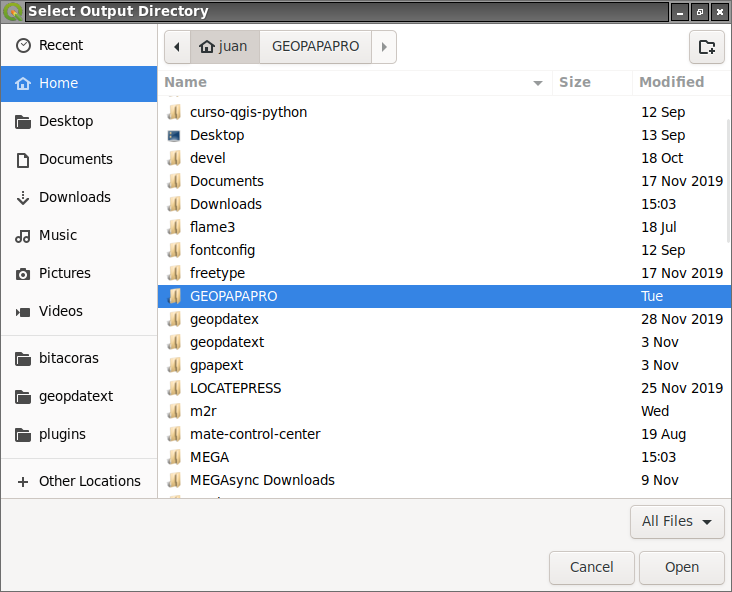Select Form¶
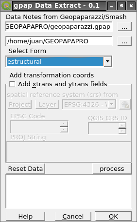Select transformation coords¶
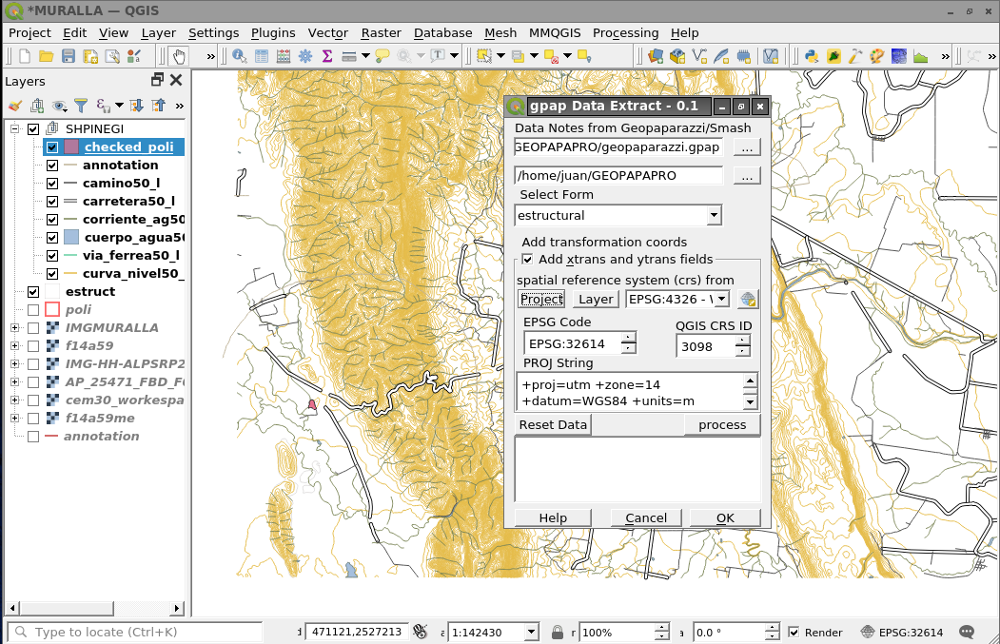Click on Layer¶
If 4 is selected the crs can be obtained from Layer
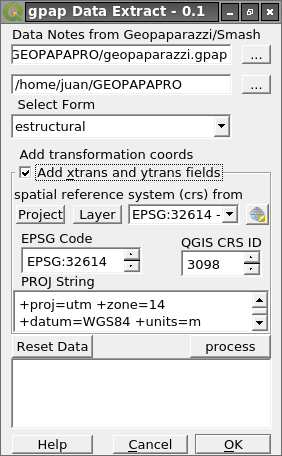Click on Project¶
If 4 is selected the crs can be obtained from Project
Click on CRS Selector¶
If 4 is selected the crs can be obtained from CRS Selector Click on CRS Selcetor
and choose the CRS
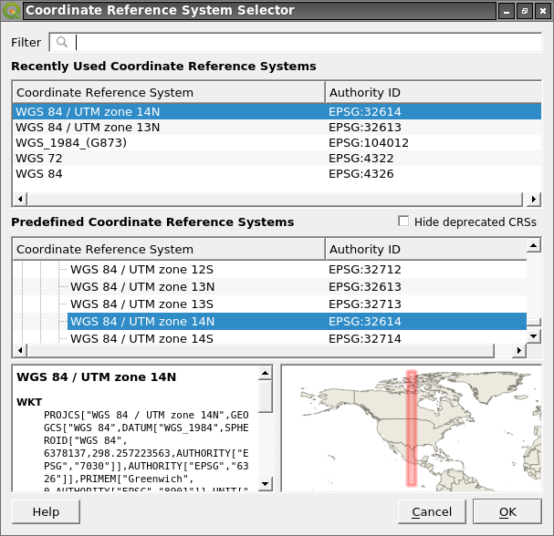Process Data¶
Click on Process to extract data from database and store on csv file
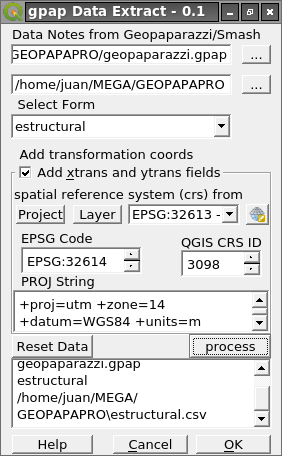Reset Data¶
Click on Reset to clear all data